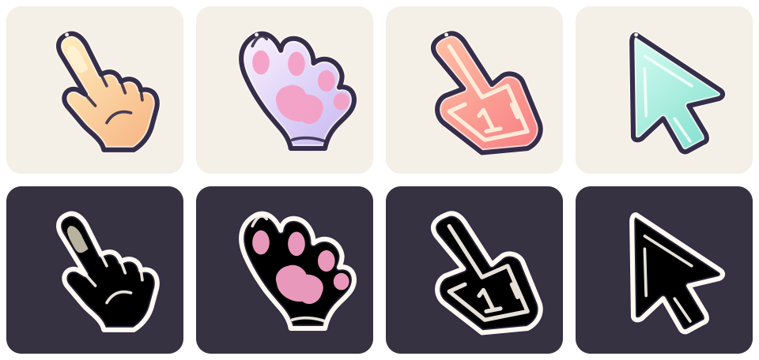
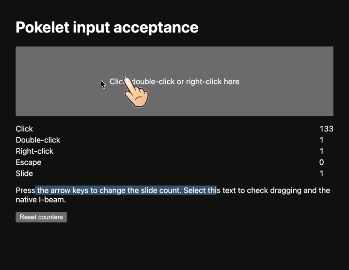

Pick a character
Choose Original, White, Black or a custom colour. Set the size and add a contrasting outline.
Point with a finger, a cat paw, a foam finger or a comic arrow. Each click makes your character poke. Click faster for a bigger reaction.
macOS 14 or later · Apple silicon and Intel · Ad hoc signed and unnotarised

Choose Original, White, Black or a custom colour. Set the size and add a contrasting outline.
Try five animation levels, show the character only on clicks, or reduce motion. Click sounds are optional.
Companion mode puts the character alongside the native arrow or text cursor while you work.
If macOS cannot verify the developer, proceed only if you trust the source and the checksum matches. In System Settings → Privacy & Security, choose Open Anyway if offered and confirm. Stop if macOS reports damage or malware. Apple’s guidance on opening apps
The universal build targets macOS 14 and later on Apple silicon and Intel.
Select the entire display so your recording app can include the overlay. Single-window capture generally excludes it. Desktop testing verified the overlay in a recording of one built-in Retina display.
The public beta needs neither Accessibility nor Input Monitoring. Click suppression is disabled. Your screen recorder handles its own macOS permissions.
Pokelet is a free, independent alternative to Pokey, with its own cartoon characters and an MIT licence.